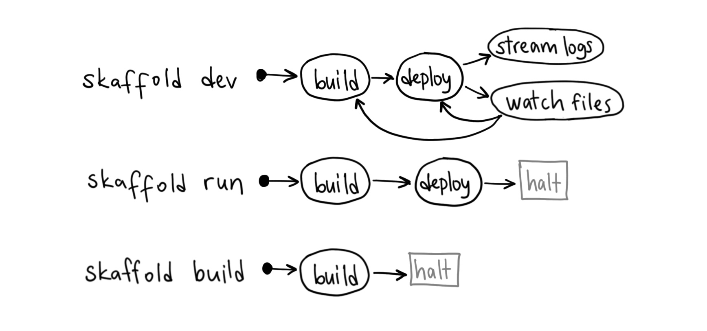
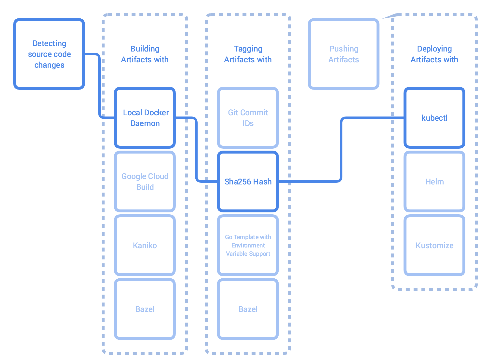
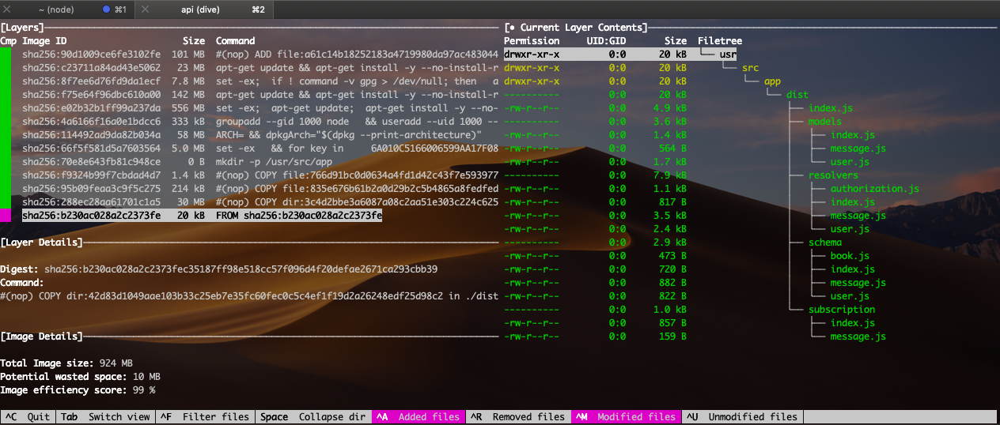

Easy and Repeatable Kubernetes Development
TLDR Below, I will showcase how to install and use skaffold for local development with kubernetes.
Currently (20/02/2019), skaffold has nearly 6000 ⭐ on github.
I have been using Skaffold for all my new projects that involve cloud native microservices, and it works like a charm on top of Docker Desktop for Mac/Minikube.
Skaffold is fantastic for local development with kubernetes. I can test locally my changes without having to deploy remotely. This helps speed up my local development and gives me confidence in my changes.
Overview
Skaffold is a tool to develop containerized applications locally or remotely while deploying them on Kubernetes. It automatically builds and deploys your apps as you change your source code.
Skaffold primarily simplifies the build → deploy → refactor → repeat cycle.
Skaffold modes

In a single command, Skaffold can:
- Collects and watches your source code for changes
- Syncs files directly to pods if user marks them as syncable
- Builds artifacts from the source code
- Tests the built artifacts using container-structure-tests
- Tags the artifacts
- Pushes the artifacts
- Deploys the artifacts
- Monitors the deployed artifacts
- Cleans up deployed artifacts on exit (Ctrl+C)
Skaffold features
Remote development: Skaffold doesn’t require you to run a local Kubernetes cluster (minikube or docker-for-desktop). It can build/push images locally with docker, and run them on the remote clusters (such as GKE). This is a laptop battery saver!
More remote development: You actually don’t need to run a local docker either. Skaffold can do remote builds using services like Google Container Builder. Although it’ll be slow.
Tag management: In your Kubernetes manifests, you leave the image tags out in the “image:” field, and Skaffold automatically changes the manifests with the new tags as it rebuilds the images.
Rebuild only what’s changed: If your microservices are on separate directories, changing source code for one will not cause rebuild for all images. Skaffold understands which images have been impacted by the change.
Cleanup on exit: Terminating “skaffold dev” runs a routine that cleans up the deployed k8s resources. If this fails, you can run “skaffold delete” to clean up deployed artifacts.
Lets get started!
On mac, you can install skaffold using brew
brew install skaffold
Local development
Run skaffold init to bootstrap Skaffold config.
Once that is complete, define in the yaml file the location of where your kubernetes manifests are defined.
Sample skaffold yaml file
apiVersion: skaffold/v1beta5
kind: Config
build:
artifacts:
- image: shanelee007/graphql
deploy:
kubectl:
manifests:
- kubernetes/config.yaml
- kubernetes/deployment.yaml
- kubernetes/secret.yaml
profiles:
- name: dev
build:
artifacts:
- image: shanelee007/graphql
sync:
'**/*.js': .
docker:
dockerfile: Dockerfile.dev
Here you can see where I defined my manifest files. Also for local development I have used a profile to define a development dockerfile and utilised the sync feature.
profiles feature grants you the freedom to switch tools as you see fit depending on the context.
Local development workflow

Sync files to your pods with Skaffold
With even one change to a file, Skaffold rebuilds the images that depend on that file, pushes them to a registry, and then redeploys the relevant parts of your Kubernetes application.
The Skaffold file sync feature solves this problem. For each image, you can specify which files can be synced directly into a running container. Then, when you modify these files, Skaffold copies them directly into the running container rather than kicking off a full rebuild and redeploy. With Skaffold’s file sync feature, you can enjoy even faster development!
Sync is quite a new feature. Think of it as similar to nodemon
I have created my own demo github project here if you want to follow along.
There was an issue with publishing docker image for local development every time I ran skaffold. To prevent this from happening there is global config to disable this.
skaffold config set --global local-cluster true #do not push images after building
Note on Dockerfile
In my github project, you can see I use multi-stage approach with my docker files
Think of it as a build pipeline as code.
It allows you to selectively copy artifacts from one stage to another, leaving behind everything you don’t want in the final image.
To analyse your final production image I found a useful tool called dive
It allows you to explore and optimise your docker image size.

Now we can run skaffold!
skaffold dev -p dev -v=info #run locally/watching changes dev mode
If you want to try out the new experimental gui run instead
skaffold dev -p dev -v=info --experimental-gui
Console output will look like so:

Every time you make a src code change, skaffold will watch for these changes and update the pod on the fly. Pretty neat!!

Upgrade
As of 20/02/2019 the latest version is v1beta5. To upgrade just run
brew upgrade skaffold
skaffold fix --overwrite
Thats all for now. In my next post, I will discuss deploying remotely using skaffold.😃